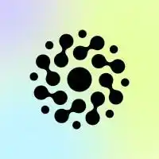

Experience
-
Applied AI Researcher | Mem0
Working on information retrieval, evals, and open-source benchmarking for memory systems.
-
 AI Intern | Swiggy (CEO's Office)
AI Intern | Swiggy (CEO's Office)Built multi-agent conversational recommender for Swiggy Scenes using LangGraph and multimodal GraphRAG.
-
 AI Engineer Intern | Akki AI
AI Engineer Intern | Akki AIBuilt a startup copilot with multi-agent CUA workflows (LangGraph) and Hybrid-RAG with persona memory. RLHF-style evaluation and deployed scalable agent clusters on AWS (FastAPI + Celery).
-
 AI Engineer Intern | EzAIx Inc.
AI Engineer Intern | EzAIx Inc.Built a multi-agent onboarding assistant using GPT-4V + LangGraph with RAG for Microsoft Suite workflows. Orchestrated async agents with FastAPI/Celery + MongoDB Atlas and Selenium-based UI control.
-
 Research Intern | Transportation Department, IIT Roorkee
Research Intern | Transportation Department, IIT RoorkeeDepth estimation, early collision-warning system for Indian traffic using 16-beam LiDAR and monocular camera.
-
 Data Science Intern | Mindshift Analytics
Data Science Intern | Mindshift AnalyticsBuilt telemetry analytics for mining fleets: fuel/dynamics modeling and anomaly detection at scale. Implemented RDP trajectory simplification + DBSCAN clustering pipelines.
-
 Software Development Intern | Strabag Efkon India
Software Development Intern | Strabag Efkon IndiaBuilt a fleet-optimization system using ML + linear programming (PuLP) for emergency response routing on Hyderabad-ORR. Delivered modular Python tooling adopted for expansion across national highways.